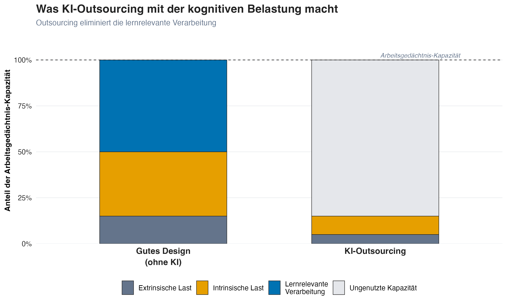

KI & Lernen
Wann KI das Lernen unterstützt, und wann sie es verhindert
20 Februar, 2026
Was wir bisher wissen
Lernen = Schemabildung im Langzeitgedächtnis
Erfordert aktive kognitive Verarbeitung
Fühlt sich anstrengend an (metakognitive Falle)
Ziel: Transfer, also Wissen auf neue Situationen anwenden können
Jetzt: Was macht KI mit diesen Prozessen?
Offloading vs. Outsourcing
Die entscheidende Unterscheidung
Cognitive Offloading
Tool reduziert Arbeitsgedächtnis-Last, während die Person denkt
Beispiel: Taschenrechner bei Problemlösung
Lernrelevante Verarbeitung: erhalten
Cognitive Outsourcing
Tool übernimmt das Denken
Beispiel: KI schreibt den Aufsatz
Lernrelevante Verarbeitung: eliminiert
Die Frage ist nicht “Dürfen Studierende KI nutzen?”, sondern: Wird das Denken ausgelagert oder nur unterstützt?
Das Offloading-Outsourcing-Spektrum

CLT und KI

KI optimiert für Produktion statt Lernen: Die Komplexität des Materials bleibt gleich, aber die Studierenden begegnen ihr nie.
Lernrelevante Verarbeitung wird nur eliminiert, wenn KI die Denkarbeit übernimmt (Outsourcing).
Wenn KI nach eigenem Versuch als Feedback-Werkzeug dient (Offloading), kann die lernrelevante Verarbeitung erhalten bleiben.
Die Reihenfolge entscheidet: Versuch → dann → KI-Feedback
Aber können Studierende nicht einfach prüfen, was die KI liefert?
Machen wir den Test.
Finde den Fehler
Der folgende Absatz enthält einen sachlich falschen Satz. Welcher?
Der p-Wert ist eines der meistverwendeten und meistmissverstandenen Konzepte der empirischen Forschung. Er gibt die Wahrscheinlichkeit an, die beobachteten Daten (oder extremere) zu erhalten, unter der Annahme, dass die Nullhypothese zutrifft. Ein häufig übersehenes Problem: Statistische Signifikanz hängt stark von der Stichprobengrösse ab. Mit genügend grossen Stichproben wird praktisch jeder noch so kleine Effekt signifikant. Umgekehrt gilt: Je kleiner die Stichprobe, desto grösser muss der beobachtete Effekt sein, um Signifikanz zu erreichen, weshalb kleine Studien die tatsächliche Effektgrösse tendenziell unterschätzen.
Schwierig? Genau das ist der Punkt.
Der Fehler
“[…] weshalb kleine Studien die tatsächliche Effektgrösse tendenziell unterschätzen.”
Das Gegenteil ist richtig: Kleine Studien, die signifikante Ergebnisse liefern, überschätzen die Effektgrösse systematisch. Nur ungewöhnlich grosse beobachtete Effekte schaffen es in kleinen Stichproben über die Signifikanzschwelle, daher sind die publizierten Effekte inflationiert [Winner’s Curse; Button u. a. (2013)].
Warum du ihn wahrscheinlich nicht gefunden hast
Dir fehlen die Schemata in quantitativer Methodenlehre. Alles klingt plausibel und fachlich korrekt, aber ohne eigene Kriterien kannst du Richtiges nicht von Falschem unterscheiden.
So geht es deinen Studierenden mit KI-generierten Texten in ihrem Fach.
Das Evaluationsparadox
“Studierende müssen lernen, KI-Outputs kritisch zu bewerten.”
Um KI-Outputs beurteilen zu können, braucht man genau die Fachkompetenz, die das Lernen erst entwickeln soll.
| Expert:innen | Anfänger:innen | |
|---|---|---|
| Bewertungskriterien | Unabhängig vorhanden | Fehlen |
| KI-Fehler | Sofort erkennbar | Nicht erkennbar |
| “Kritische Nutzung” | Echte Evaluation | Oberflächliches Prüfen |
Kompetente Nutzung setzt Kompetenz voraus
Expert:innen können KI als Verstärker nutzen. Anfänger:innen riskieren dauerhafte Abhängigkeit. Das trifft Studierende mit schwachem Vorwissen überproportional (Cui u. a. 2024).
Lernen ≠ Leisten
Studierende können mit KI korrekte Ergebnisse produzieren (leisten), ohne etwas gelernt zu haben (Bjork 1994). Die Folge: Schein-Kompetenz. Texte, die fachlich korrekt aussehen, aber ohne eigene kognitive Arbeit entstanden sind.
Das sichtbare Problem ist akademische Integrität.
Das eigentliche Problem liegt tiefer: Ohne eigene Verarbeitung entstehen keine Schemata. Ohne Schemata kein Transfer. Wenn Studierende später in neuen Situationen auf sich gestellt sind, fehlen ihnen die internen Ressourcen.
Das Kernproblem ist nicht Plagiat
Das Kernproblem ist, dass Studierende kompetent aussehen können, ohne kompetent zu sein. Die Lücke wird erst sichtbar, wenn die KI nicht mehr verfügbar ist.
Wie gestalten wir Aufgaben, die das Lernen schützen?
5 Leitfragen für die Aufgabenanalyse
Leitfrage 1
Geht es primär ums Lernen?
Nein
Die Aufgabe dient der Produktion, nicht dem Kompetenzaufbau. KI-Unterstützung kann sinnvoll sein.
Ja
Die kognitive Arbeit muss geschützt werden. Nächster Schritt: herausfinden, welche Denkarbeit die Aufgabe verlangt.
Leitfrage 2
Welche Denkarbeit verlangt die Aufgabe?
| Operation | Was Studierende tun | Wozu es dient |
|---|---|---|
| Abrufen | Wissen aus dem Gedächtnis aktivieren | Festigt Schemata (Retrieval Practice) |
| Generieren | Eigenen Versuch produzieren | Baut neue Verbindungen auf (Generation Effect) |
| Verknüpfen | Vergleichen, einordnen, integrieren | Erweitert und vernetzt Schemata |
| Überwachen | Eigene Arbeit prüfen, Fehler erkennen | Stärkt metakognitive Kontrolle |
Diese Operationen sind das Lernen. Was davon wegfällt, fehlt im Kopf der Studierenden.
Leitfrage 3
Welche dieser Operationen würde KI übernehmen?
Nicht die ganze Aufgabe, sondern: Welche spezifische Denkarbeit fällt weg, wenn Studierende KI einsetzen?
Manchmal übernimmt KI nur einen Teil der Aufgabe. Oft ist genau dieser Teil der lernrelevante.
Leitfrage 4
Werden noch Grundlagen aufgebaut?
Ja
Studierende bauen noch Grundwissen auf. Die identifizierten Operationen müssen bei ihnen bleiben.
Nein
Studierende haben bereits Schemata aufgebaut. Sie können KI-Output einordnen und gezielt nutzen, weil sie eigene Kriterien haben.
Leitfrage 5
Arbeiten Studierende zuerst selbst, bevor KI ins Spiel kommt?
Ja
Studierende durchlaufen die Kernoperationen zuerst selbst, KI kommt danach. Die Reihenfolge ist bereits richtig.
Nein
Ohne eigenen Versuch gibt es nichts, woran KI-Feedback ansetzen kann. Reihenfolge einbauen: erst Versuch, dann KI.
3 Diagnose-Fragen
Hat das Denken bei den Studierenden stattgefunden?
| Zeitpunkt | Frage an Studierende | Was sie zeigt |
|---|---|---|
| Vorher | “Was hast du versucht, bevor du KI gefragt hast?” | Gab es einen eigenen Versuch? |
| Während | “Wo hat dich die KI überrascht, und warum?” | War das interne Modell aktiv? |
| Nachher | “Was machst du nächstes Mal anders, ohne KI?” | Hat sich das Verständnis aktualisiert? |
Die Schlüsselfrage ist “Während”: Wer outsourct, hat keine spezifischen Erwartungen, die überrascht werden konnten. Wer das Denken selbst geleistet hat, kann konkrete Überraschungsmomente benennen.
Jetzt seid ihr dran
Im nächsten Teil wendet ihr diese Leitfragen auf eure eigenen Aufgaben an.
Auf der Website findet ihr ein Agent-Template: Studierende arbeiten zuerst selbst, dann gibt der Agent gezieltes Feedback.